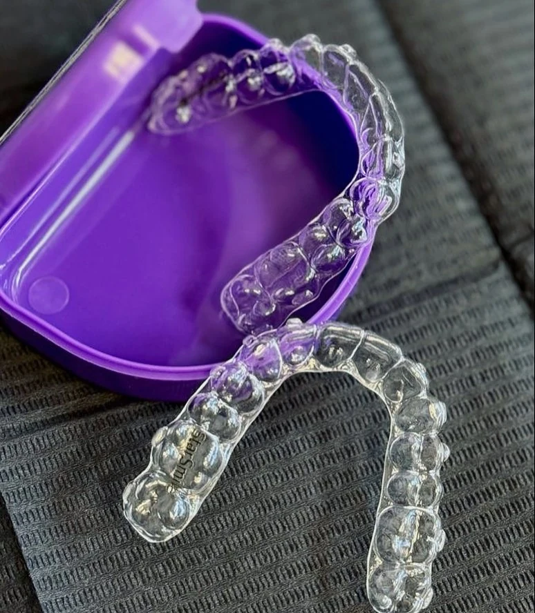
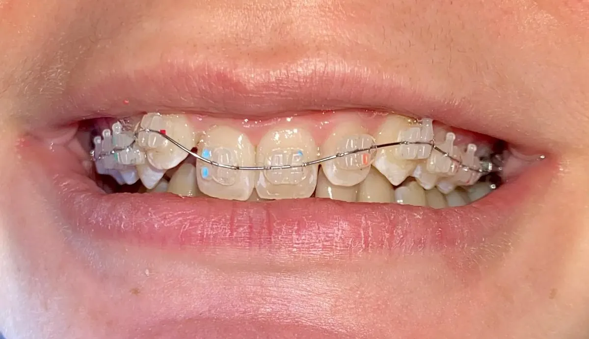
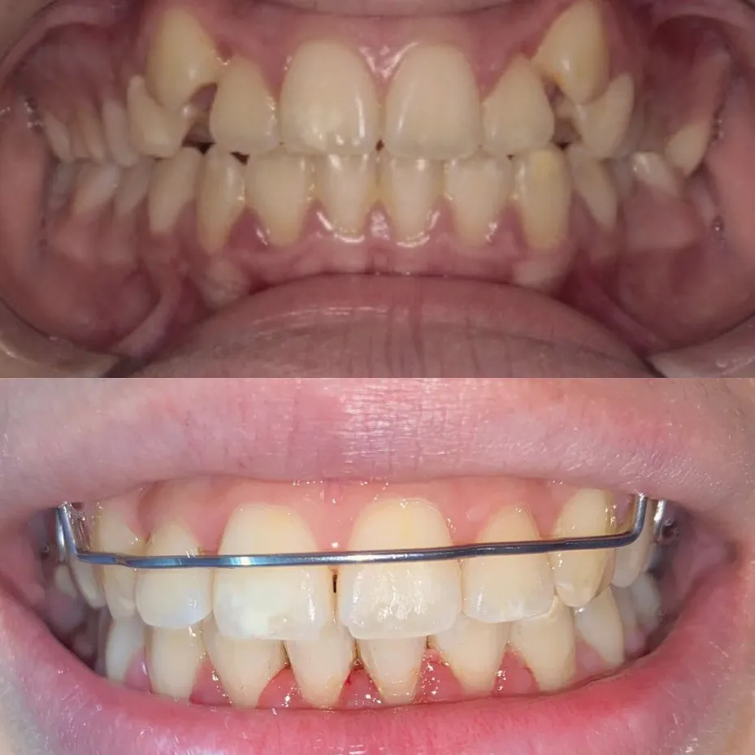
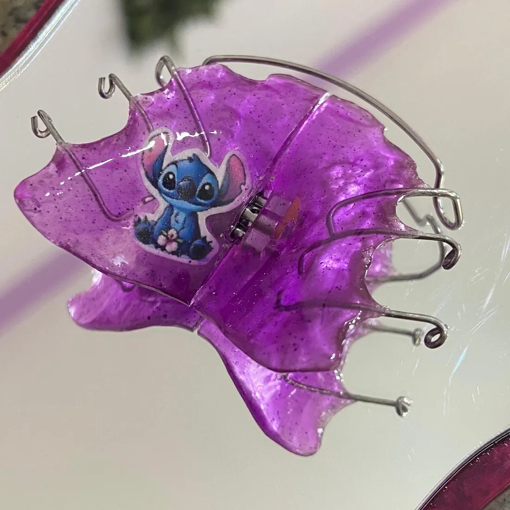
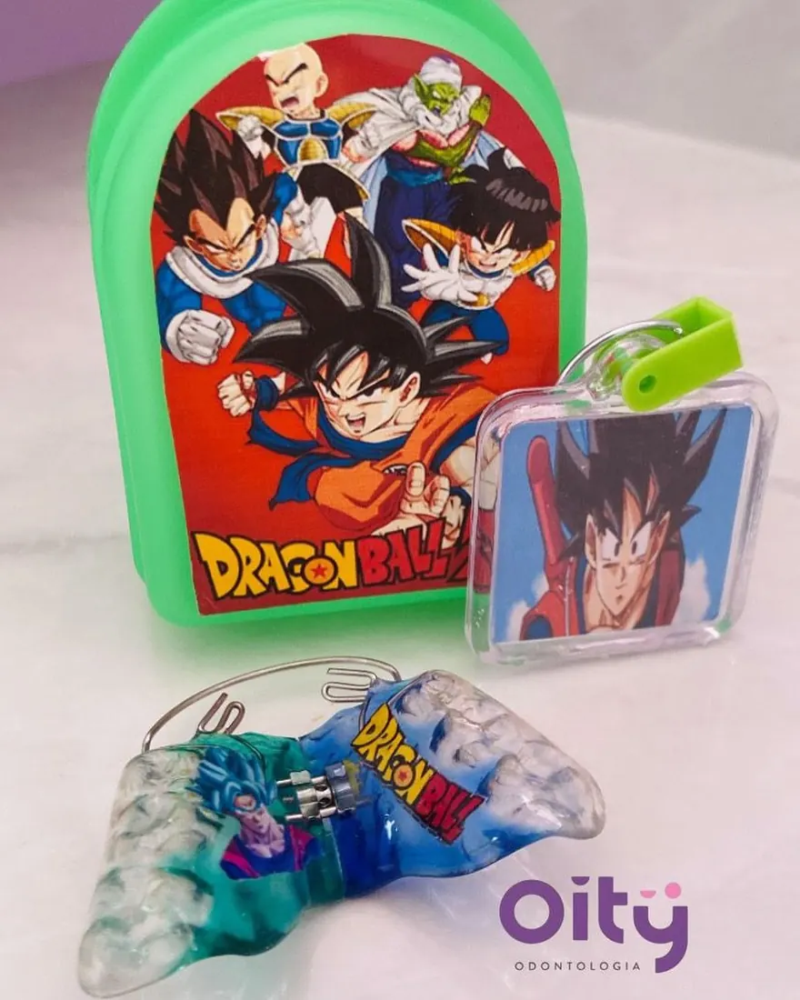
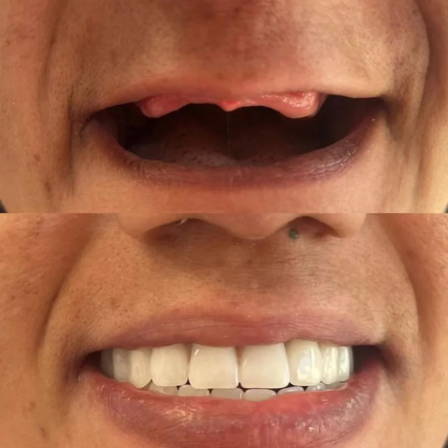
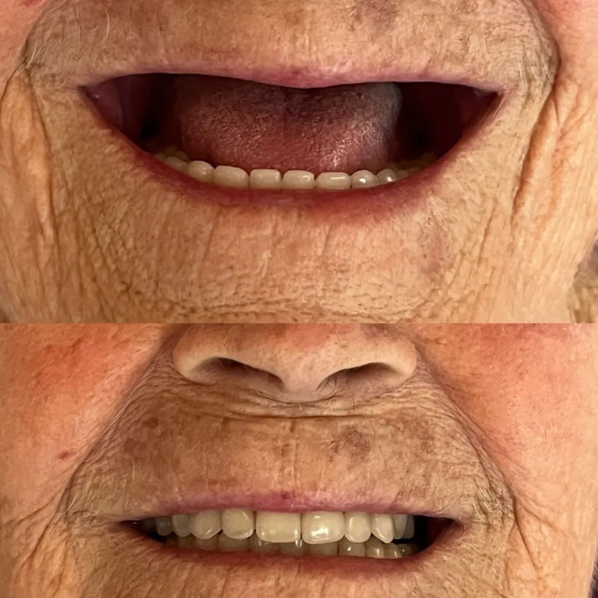
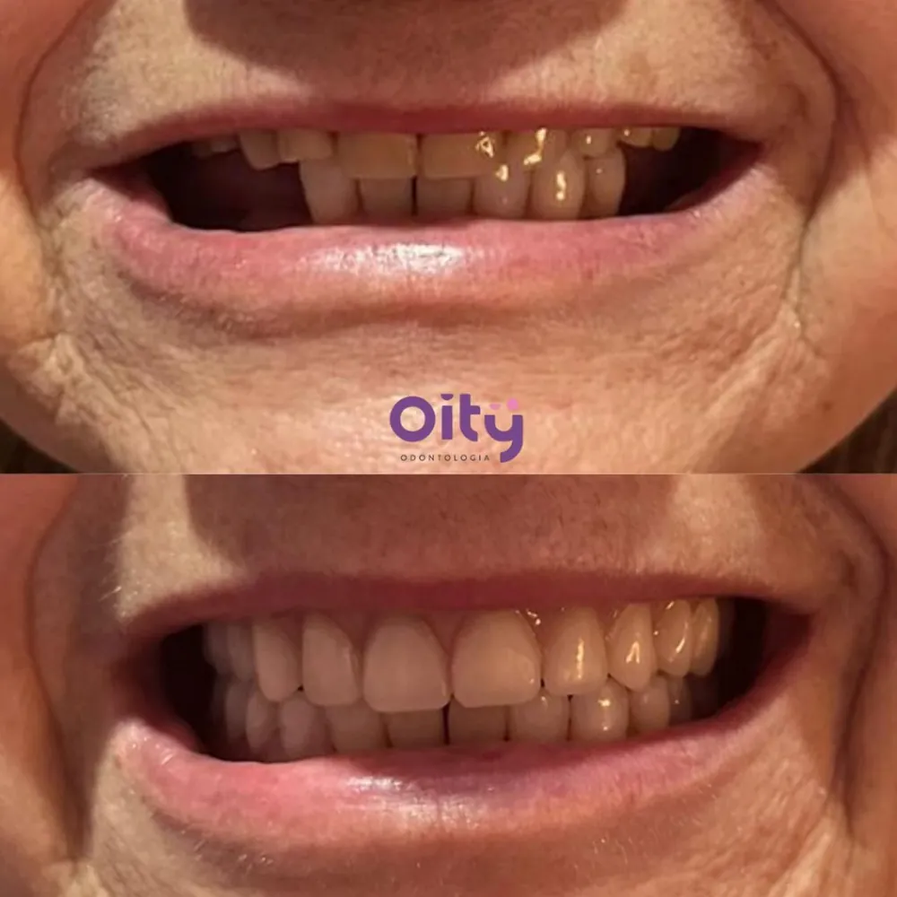

A ortodontia evoluiu e nós estamos acompanhando cada passo!
Um sorriso alinhado pode transformar sua autoestima.
Você cuida do seu sorriso de forma discreta, prática, facilitando momentos simples como uma refeição ou a higiene bucal.
Oity Odontologia Ribeirão Preto
Agende sua avaliação
Na Clínica Oity Odontologia, cuidamos do seu sorriso com dedicação e excelência.
Odontologia Avançada · Dra. Thayná Martins · CROSP 110647
Agende sua avaliaçãoOdontologia Avançada
Dra. Thayná Martins · CROSP 110647
O nosso compromisso é proporcionar o melhor para sua saúde!
Cada detalhe foi pensado para proporcionar naturalidade e harmonia, porque acreditamos que todo paciente merece se olhar no espelho e se sentir confiante.
Oity Odontologia
01Ortodontia

Um sorriso alinhado pode transformar sua autoestima.
Você cuida do seu sorriso de forma discreta, prática, facilitando momentos simples como uma refeição ou a higiene bucal.

AntesDepoisCom planejamento e acompanhamento profissional, alcançamos alinhamento, funcionalidade e autoestima.
Publicado com @roberta.castro.orto
02Aparelhos


03Casos
Antes e depois publicados em @oityodontologia.

AntesDepoisNeste caso, confeccionamos uma prótese total superior e um protocolo inferior, devolvendo conforto, funcionalidade e a alegria de sorrir sem medo.

AntesDepoisConfira esse antes e depois desse incrível resultado com nossa prótese total.

AntesDepois04Tratamentos
Uma opção mais discreta e estética para alinhar os dentes com conforto e eficiência.
A prótese protocolo é um tipo de prótese total dentária fixa, suportada por implantes, utilizada principalmente para reabilitação oral de pacientes que perderam todos os dentes de um arco (superior ou inferior).
Proporciona uma aparência natural e funcionalidade similar aos dentes naturais, permitindo ao paciente mastigar, falar e sorrir com confiança.
Cuidar do seu implante vai muito além da escovação diária. A ausência de manutenções profissionais pode trazer sérios riscos, como:
As limpezas profissionais periódicas ajudam a manter a saúde do seu implante, evitam complicações e aumentam a durabilidade do seu sorriso fixo.
A profilaxia (limpeza) a cada 6 meses é essencial para remover placa bacteriana, prevenir cáries e manter a saúde bucal em dia — tanto para crianças quanto para adultos!
Esse procedimento remove tártaro, placa bacteriana e manchas, transformando o sorriso e a autoestima do paciente.
Quanto antes for identificada a necessidade, mais simples será o tratamento.
Alguns tratamentos ortodônticos precisam ser feitos antes das crianças trocarem os dentes. Recomendamos a avaliação ortodôntica a partir dos 6 anos.
O Botox é um dos procedimentos mais procurados para quem busca um visual leve e rejuvenescido, sem perder a naturalidade.
Agende sua avaliação e dê o primeiro passo para o seu novo sorriso!
Agende sua avaliação